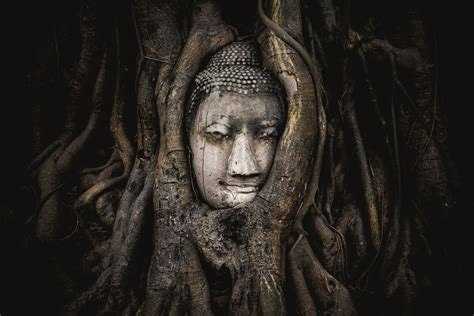

According to folklore, a pishtaco is an evil monster-like man—often a stranger and often a white man—who seeks out unsuspecting Indians to kill them and abuse them in many ways. The legend dates back to the Spanish conquest of South America. Primarily, this has been stealing their body fat for various cannibalistic purposes, or cutting them up and selling their flesh as fried chicharrones. Pishtaco derives from the local Quechua-language word "pishtay" which means to "behead, cut the throat, or cut into slices". The preoccupation with body fat has a long tradition in the Andes region. Pre-Hispanic natives prized fat so much that a deity, Viracocha (meaning sea of fat), existed for it. It is also natural for the peasant rural poor to view fleshiness and excess body fat as the very sign of life, good health, strength and beauty. Many illnesses are thought to have their roots in the loss of body fats, and skeletal thinness is abhorred. With this, the conquistadores' practice of treating their wounds with their enemies' corpse fats horrified the Indians. Spaniards are also said to have killed Indians and boiled their corpses to produce fat to grease their metal muskets and cannons, which rusted quickly in the humid Amazon
Andean Aboriginals feared Spanish missionaries as pishtacos, believing the missionaries were killing people for fat, thereafter oiling churchbells to make them especially sonorous.[6] In modern times, similar beliefs held that sugar mill machinery needed human fat as grease, or that jet aircraft engines could not start without a squirt of human fat. Pishtaco beliefs have affected international assistance programs, e.g. leading to rejection of the US Food for Peace program by several communities, out of fears that the real purpose was to fatten children and later exploit them for their fat.Natives have attacked survey geologists working on the Peruvian and Bolivian altiplano who believed that the geologists were pishtaco.The work of anthropologists has been stymied because measurements of fat folds were rumoured to be part of a plot to select the fattest individuals later to be targeted by pishtacos. In 2009, the pishtaco legend was cited as a possible contributory factor in the apparent fabrication of a story by Peruvian police of a gang murdering up to 60 people to harvest their fat